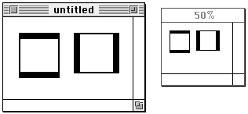

Legacy Document
Important: The information in this document is obsolete and should not be used for new development.
Important: The information in this document is obsolete and should not be used for new development.


Drawing With QuickDraw
You can use QuickDraw's basic drawing routines to
System software uses QuickDraw's drawing routines to implement the Macintosh user interface. The next several sections provide an introduction to these routines, which your application can use to create complex onscreen images.
- draw lines of various thicknesses and in various patterns
- draw rectangles, rounded rectangles, ovals, arcs, wedges, polygons, and regions in various patterns
- draw lines and shapes in any of eight predefined colors, against a background of any of these eight predefined colors
- perform calculations on and manipulate rectangles and regions
- copy bits from the bit image in the bitmap of one graphics port into the bitmap of another graphics port
- customize QuickDraw's drawing behavior
To draw lines, your application
To draw rectangles, rounded rectangles, ovals, arcs, and wedges, your application generally
- moves the graphics pen to a location within its graphics port
- draws a line to a different coordinate
To draw regions and polygons, your application
- defines the outline of the shape in the local coordinates of the graphics port
- frames the shape's outline to draw it
- transfers patterns to the outline and interior of the shape to paint or fill it
These tasks are explained in greater detail in the rest of this chapter.
- uses an open routine to start building the shape
- calls drawing routines to build the shape
- uses a close routine to stop collecting drawing routines for the shape
- frames the shape's outline to draw it
- transfers patterns to the outline and interior of the shape to paint or fill it
Before using QuickDraw's drawing routines, you must initialize QuickDraw with the
InitGrafprocedure, as explained in the chapter "Basic QuickDraw."The routines described in this chapter are available on all models of Macintosh computers. However, all nonwhite colors that you specify with the
ForeColorandBackColorprocedures are displayed as black on a black-and-white screen. Before using theForeColorandBackColorprocedures to display colors in a basic graphics port, you can use theDeviceLoopprocedure, which is described in the chapter "Graphics Device," to determine the color characteristics of the current screen.Drawing Lines
A line is defined by two points: the current location of the graphics pen and its destination. The graphics pen draws below and to the right of the defining points. As described in "The Graphics Pen" on page 3-4, the pen draws the line between its defining points with the size, pattern, and pattern mode stored in the current graphics port.You specify where to begin drawing a line by using the
MoveToorMoveprocedure to place the graphics pen at some point in the window's local coordinate system. Then you call theLineToorLineprocedure to draw a line from there to another point. Take, for example, the following lines of code:
MoveTo(20,20); LineTo(70,20); LineTo(70,70);TheMoveToprocedure moves the graphics pen to a point with a horizontal coordinate of 20 and a vertical coordinate of 20 (in the local coordinate system of the graphics port). The first call to theLineToprocedure draws a line from that position to the point with a horizontal coordinate of 70 and a vertical coordinate of 20. The second call to theLineToprocedure draws a line from the pen's new position to the point with a horizontal coordinate of 70 and a vertical coordinate of 70, as shown in Figure 3-5.Figure 3-5 Using the
LineToprocedure
Listing 3-1 illustrates how to use theLineToprocedure to draw the four sides of a square, which is shown on the left side of Figure 3-6. In Figure 3-6, the current graphics port is the window "untitled."Listing 3-1 Drawing lines with the
LineToandLineprocedures
PROCEDURE MyDrawLines; BEGIN MoveTo(20,20); LineTo(70,20); LineTo(70,70); LineTo(20,70); LineTo(20,20); Move(70,0); Line(50,0); Line(0,50); Line(-50,0); Line(0,-50); END;Figure 3-6 Drawing lines
TheMoveToandLineToprocedures require you to specify a point in the local coordinate system of the current graphics port. These procedures then transfer the graphics pen to that specific location. As alternatives to using theMoveToandLineToprocedures, you can use theMoveandLineprocedures, which require you to pass relative horizontal and vertical distances to move the pen from its current location. The square on the right side of Figure 3-6 is drawn using theMoveandLineprocedures.The final call to
LineToin Listing 3-1 moves the graphics pen to the point with a horizontal coordinate of 20 and a vertical coordinate of 20. Listing 3-1 then uses theMoveprocedure to move the graphics pen a horizontal distance of 70 points--that is, to the point with a horizontal coordinate of 90. The first call to theLineprocedure draws a horizontal line 50 pixels long--that is, to the point with a horizontal coordinate of 140 and a vertical coordinate of 20. Starting from there, the second call toLinedraws a vertical line 50 pixels long--that is, to the point with a horizontal coordinate of 140 and a vertical coordinate of 70, as shown in Figure 3-7.Figure 3-7 Using the
LineToandLineprocedures
In Figure 3-6, the lines are drawn using the default pen size (1,1), giving the line a vertical depth of one pixel and a horizontal width of one pixel. You can use thePenSizeprocedure to change the width and height of the graphics pen so that it draws thicker lines, as shown in Figure 3-8.
The square on the left side of Figure 3-8 is drawn with a pen that has a width of two pixels and a height of eight pixels. The square on the right side of this figure is drawn with a pen that has a width of eight pixels and a height of two pixels. Listing 3-2 shows the code that draws these squares.Listing 3-2 Using the
PenSizeprocedure
PROCEDURE MyResizePens; BEGIN PenSize(2,8); MoveTo(20,20); LineTo(70,20); LineTo(70,70); LineTo(20,70); LineTo(20,20); PenSize(8,2); Move(70,0); Line(50,0); Line(0,50); Line(-50,0); Line(0,-50); PenNormal; END;At the end of Listing 3-2, thePenNormalprocedure is used to restore the graphics pen to its default size, pattern, and pattern mode.The default pattern for the graphics pen consists of all black pixels. However, you can use the
PenPatprocedure to change the pen's pattern. When you use thePenPatprocedure, you can pass it any one of the predefined global variables listed in to specify the bit pattern for the graphics pen.
Table 3-2 The global variables for five predefined bit patterns Global variable Result black All-black pattern dkGray 75% gray pattern gray 50% gray pattern ltGray 25% gray pattern white All-white pattern In Figure 3-9, the pen pattern for the square on the left has changed to
ltGray; the pen pattern for the square on the right has changed todkGray.Figure 3-9 Changing the pen pattern
Listing 3-3 shows the code that produces these squares.Listing 3-3 Using the
PenPatprocedure to change the pattern of the graphics pen
PROCEDURE MyRepatternPens; BEGIN PenSize(2,8); PenPat(ltGray); MoveTo(20,20); LineTo(70,20); LineTo(70,70); LineTo(20,70); LineTo(20,20); PenSize(8,2); PenPat(dkGray); Move(70,0); Line(50,0); Line(0,50); Line(-50,0); Line(0,-50); PenNormal; END;QuickDraw provides methods for drawing squares and rectangles that are easier than drawing each side individually as a line. The next section describes how to draw rectangles.Drawing Rectangles
As explained in the chapter "Basic QuickDraw," rectangles are mathematical entities. There are two ways to specify a rectangle: by its four boundary coordinates, as shown in the left rectangle in Figure 3-10, or by its upper-left and lower-right points, as shown in the right rectangle.Figure 3-10 Two ways to specify a rectangle
However, specifying a rectangle does not draw one. Because the border of a rectangle is infinitely thin, it can have no direct representation on the screen until you use theFrameRectprocedure to draw its outline, or you can use thePaintRectorFillRectprocedure to draw its outline and its interior with a pattern. Figure 3-11 illustrates two rectangles that are drawn with theFrameRectprocedure.Figure 3-11 Drawing rectangles
Listing 3-4 shows the code that draws the rectangles in Figure 3-11. This listing uses thePenSizeprocedure to assign a size of (2,2) to the graphics pen. Then the code assigns four boundary coordinates to the rectangle on the left side of this figure, and it callsFrameRectto use the graphics pen to draw the rectangle's outline.Listing 3-4 Using the
FrameRectprocedure to draw rectangles
PROCEDURE MyDrawRects; VAR firstRect, secondRect: Rect; BEGIN PenSize(2,2); firstRect.top := 20; firstRect.left := 20; firstRect.bottom := 70; firstRect.right := 70; FrameRect(firstRect); SetRect(secondRect,90,20,140,70); FrameRect(secondRect); PenNormal; END;To shorten code text, Listing 3-4 uses theSetRectprocedure to define the rectangle on the right side of Figure 3-11. Again,FrameRectis used to draw an outline around the rectangle. Notice that while aRectrecord lists the fields for a rectangle's boundaries in the ordertop,left,bottom, andright, you pass these boundaries as parameters to theSetRectprocedure in the orderleft,top,right, andbottom.Remember that the graphics pen hangs to the right of and below its location point; therefore, the lower-right corner of the two-pixel outline around the rectangle on the right side of Figure 3-11 lies at the point with a horizontal coordinate of 142 and a vertical coordinate of 72.
Figure 3-12 illustrates painted and filled rectangles. Listing 3-5 shows the code that creates these images.
Figure 3-12 Painting and filling rectangles
Listing 3-5 uses thePaintRectprocedure to draw the outline and the interior of the rectangle on the left side of Figure 3-12 with the pattern of the graphics pen, according to the pattern mode of the graphics pen. Because Listing 3-5 calls thePenNormalprocedure immediately before callingPaintRect, the graphics pen has its default characteristics: a pattern of all-black pixels and thepatCopypattern mode, which changes all of the pixels in the destination to the pen's pattern.Listing 3-5 Using the
PaintRectandFillRectprocedures
PROCEDURE MyPaintAndFillRects; VAR firstRect, secondRect: Rect; BEGIN PenNormal; SetRect(firstRect,20,20,70,70); PaintRect(firstRect); SetRect(secondRect,20,90,70,140); FillRect(secondRect,ltGray); END;ThePaintRectprocedure always uses the pattern and pattern mode of the graphics pen when drawing a rectangle. If you want to use a pattern other than that of the graphics pen, you can use theFillRectprocedure. TheFillRectprocedure, however, always uses thepatCopypattern mode. Listing 3-5 uses theFillRectprocedure to draw the outline and the interior of the rectangle on the right side of
Figure 3-12 with a light gray pattern.
If the application that draws the rectangles in Figure 3-12 uses the
- Note
- Neither the
PaintRectnorFillRectprocedure changes the location of the graphics pen.
EraseRectprocedure to erase them both, then they would be filled with the background pattern specified by thebkPatfield of the current graphics port. If the application uses theInvertRectprocedure to invert the rectangles, then the black pixels in each would become white and the white pixels would become black.QuickDraw provides a similar set of routines for drawing rounded rectangles, which are defined by their rectangles and the widths and heights of the ovals forming their corners. See "Drawing Rounded Rectangles" beginning on page 3-59 for detailed information about these routines.
Drawing Ovals, Arcs, and Wedges
An oval is a circular or elliptical shape defined by the bounding rectangle that encloses it. After specifying the bounding rectangle for an oval, you use theFrameOvalprocedure to draw its outline, or thePaintOvalorFillOvalprocedure to draw its outline and its interior with a pattern. Figure 3-13 illustrates two ovals drawn with theFrameOvalprocedure.
Listing 3-6 shows the code that produces the ovals in Figure 3-13. The bounding rectangles for the ovals are created with theSetRectprocedure. The resulting rectangles are then passed to the FrameOval procedure.Listing 3-6 Using the
FrameOvalprocedure to draw ovals
PROCEDURE MyDrawOvals; VAR firstRect, secondRect: Rect; BEGIN PenSize(2,2); SetRect(firstRect,20,20,70,70); {create a bounding rectangle} FrameOval(firstRect); {draw the oval} SetRect(secondRect,90,20,140,70); {create a bounding rectangle} FrameOval(secondRect); {draw the oval} PenNormal; END;An arc is defined as a portion of an oval's circumference bounded by a pair of radii. A wedge is a pie-shaped segment bounded by a pair of radii, and it extends from the center of the oval to its circumference. You use theFrameArcprocedure to draw an arc (as shown on the left side of Figure 3-14), and you use thePaintArcorFillArcprocedure to draw a wedge (as shown on the right side of Figure 3-14).Figure 3-14 Drawing an arc and a wedge
Listing 3-7 shows the code that produces the images in Figure 3-14. TheFrameArc,PaintArc, andFillArcprocedures take three parameters: a rectangle that defines an oval's boundaries, an angle indicating the start of the arc, and an angle indicating the arc's extent. For the angle parameters, 0 indicates a vertical line straight up from the center of the oval. Positive values indicate angles in the clockwise direction from this vertical line, and negative values indicate angles in the counterclockwise direction. The arc and the wedge in Figure 3-14 both begin at 45 and extend to 135.Listing 3-7 Using the
FrameArcandPaintArcprocedures
PROCEDURE MyDrawArcAndPaintWedge; VAR firstRect, secondRect: Rect; BEGIN SetRect(firstRect,20,20,70,70); {create a bounding rectangle} FrameArc(firstRect,45,135); {draw an arc} SetRect(secondRect,90,20,140,70); {create a bounding rectangle} PaintArc(secondRect,45,135); {draw a wedge} END;You can also fill, erase, and invert wedges by using, respectively, theFillArc,EraseArc, andInvertArcprocedures.Drawing Regions and Polygons
Before drawing regions and polygons, you must call several routines to create them. To create a region or polygon, you first call an open routine, which tells QuickDraw to collect subsequent routines to construct the shape. You use a close procedure when you are finished constructing the region or polygon. You can then frame the shape, fill it, paint it, erase it, and invert it.To begin defining a region, you must use the
NewRgnfunction to allocate space for it, and then call theOpenRgnprocedure. You can then use any QuickDraw routine to construct the outline of the region. The outline can be any set of lines and shapes (including other regions) forming one or more closed loops. When you are finished constructing the region, use theCloseRgnprocedure.
To draw the region, use the
- WARNING
- Ensure that the memory for a region is valid before calling routines to manipulate that region; if there isn't sufficient memory, the system may crash. Regions are limited to 32 KB in size in basic QuickDraw and 64 KB in Color QuickDraw. Before defining a region, you can use the Memory Manager function
MaxMemto determine whether the memory for the region is valid. You can determine the current size of an existing region by calling the Memory Manager functionGetHandleSize. (BothMaxMemandGetHandleSizeare described in Inside Macintosh: Memory.) When you record drawing operations in an open region, the resulting region description may overflow the 32 KB or 64 KB limit. Should this happen in Color QuickDraw, theQDErrorfunction (described in the chapter "Color QuickDraw" in this book) returns the result coderegionTooBigError.FrameRgn,PaintRgn, orFillRgnprocedure. To draw the region with the background pattern of the graphics port, use theEraseRgnprocedure; to invert the pixels in the region, use theInvertRgnprocedure. When you no longer need the region, use theDisposeRgnprocedure to release the memory used by the region.Listing 3-8 illustrates how to create and open a region, define a shape, close the region, fill it with the all-black pattern, and dispose of the region.
Listing 3-8 Creating and drawing a region
PROCEDURE MyDrawDumbbell; VAR grow: LongInt; dumbbell: RgnHandle; tempRect: Rect; BEGIN IF MaxMem(grow) > kMinReserve THEN BEGIN dumbbell := NewRgn; {create a new region} OpenRgn; {begin drawing instructions} SetRect(tempRect,20,20,30,50); FrameOval(tempRect); {form the left "weight"} SetRect(tempRect,25,30,85,40); FrameRect(tempRect); {form the bar} SetRect(tempRect,80,20,90,50); FrameOval(tempRect); {form the right "weight"} CloseRgn(dumbbell); {stop collecting} FillRgn(dumbbell,black); {draw the shape onscreen} IF QDError <> noErr THEN ; {likely error is that there is insufficient memory} DisposeRgn(dumbbell) {dispose of the region} END; END;Figure 3-15 shows the shape created by Listing 3-8.Figure 3-15 A shape created by a region
To assist you with scrolling, you can use QuickDraw routines to define a clipping region that excludes the scroll bars of the content region of a window. You can then scroll that area so that the region being updated does not draw into the scroll bars. Listing 3-9 illustrates how to create such a clipping region and, for illustrative purposes, how to fill it with a pattern. (The chapter "Basic QuickDraw" illustrates how to scroll the pixels in a rectangle such as the one created with theClipRectprocedure in Listing 3-9.)Listing 3-9 Creating a clipping region and filling it with a pattern
FUNCTION MyFillClipRegion: RgnHandle; VAR grow: LongInt; newClip: Rect; oldClipRegion: RgnHandle; newClipRegion: RgnHandle; myWindow: WindowPtr; BEGIN IF MaxMem(grow) > kMinReserve THEN BEGIN oldClipRegion := NewRgn; {allocate old clipping region} myWindow := FrontWindow; {get the front window} SetPort(myWindow); {make the front window the current } { graphics port} GetClip(oldClipRegion); {save the old clipping region} newClip := myWindow^.portRect; {create a new rectangle} newClip.right := newClip.right - 15; {exclude scroll bar} newClip.bottom := newClip.bottom - 15; {exclude scroll bar} ClipRect(newClip); {make the new rectangle the clipping region} newClipRegion := NewRgn; {allocate new clipping region} RectRgn(newClipRegion, newClip); FillRgn(newClipRegion, ltGray); {paint clipping region gray} SetClip(oldClipRegion); {restore previous clipping region} IF QDError <> noErr THEN ; {likely error is that there is insufficient memory} DisposeRgn(oldClipRegion); {dispose previous clipping region} MyFillClipRect := (newClipRegion); END; END;Figure 3-16 shows the results of using the code in Listing 3-9.Figure 3-16 Filling a clipping region
To create a polygon, you first call theOpenPolyfunction and then some number ofLineToprocedures to draw lines from the first vertex of the polygon to the second, from the second to the third, and so on, until you've drawn a line to the last vertex. You then use theClosePolyprocedure, which completes the figure by drawing a connecting line from the last vertex back to the first. After defining a polygon in this way, you can display it with theFramePoly,PaintPoly,FillPoly,ErasePoly, andInvertPolyprocedures. When you are finished using the polygon, use theKillPolyprocedure to release its memory.
Listing 3-10 illustrates how to create a triangular polygon and fill it with a gray pattern.
- WARNING
- Do not create a height or width for the polygon greater than 32,767 pixels, or
PaintPolywill crash.Listing 3-10 Creating a triangular polygon
PROCEDURE MyDrawTriangle; VAR triPoly: PolyHandle; BEGIN triPoly := OpenPoly; {save handle and begin collecting lines} MoveTo(300,100); {move to first point} LineTo(400,200); {form the triangle's sides} LineTo(200,200); ClosePoly; {stop collecting lines} FillPoly(triPoly,gray); {fill the polygon with gray} IF QDError <> noErr THEN ; {likely error is that there is insufficient memory} KillPoly(triPoly); {dispose of its memory} END;Performing Calculations and Other Manipulations of Shapes
QuickDraw provides a multitude of routines for manipulating rectangles and regions. You can use the routines that manipulate rectangles to manipulate any shape based on a rectangle--namely, rounded rectangles, ovals, arcs, and wedges. For example, you could define a rectangle to bound an oval and then frame the oval. You could then use theOffsetRectprocedure to move the oval's bounding rectangle downward. Using the offset bounding rectangle, you could frame a second, connected oval to form a figure eight with the first oval. You could use that shape to help define a region. You could create a second region, and then use theUnionRgnprocedure to create a region from the union of the two.The routines for performing calculations and other manipulations of rectangles are summarized in Table 3-3 and are described in detail in "Creating and Managing Rectangles" beginning on page 3-48.
The routines for performing calculations and other manipulations of regions are summarized in Table 3-4 and are described in detail in "Creating and Managing Regions" beginning on page 3-81.
Note that while you can use the
OffSetPolyprocedure to move a polygon, QuickDraw provides no other routines for calculating or manipulating polygons.Copying Bits Between Graphics Ports
You can use theCopyBitsprocedure to copy a bit image from one graphics port to another. Along with theCopyMaskprocedure and the Color QuickDraw procedureCopyDeepMask,CopyBitsis integral to QuickDraw's image-processing capabilities. You can useCopyBitsto move offscreen graphics images into an onscreen window, to blend colors for the image in a pixel map, and to shrink and expand images. For example, Figure 3-17 illustrates howCopyBitscan be used to scale the image in one window to a smaller image in another window.Figure 3-17 Shrinking images between graphics ports

Listing 3-11 shows the code that produces the scaled image in Figure 3-17.Listing 3-11 Using the
CopyBitsprocedure to copy between two windows
PROCEDURE MyShrinkImages; VAR myWindow: WindowPtr; sourceRect, destRect: rect; halfHeight, halfWidth: Integer; BEGIN myWindow := FrontWindow; sourceRect.top := myWindow^.portRect.top; {create source rectangle} sourceRect.left := myWindow^.portRect.left; sourceRect.bottom := myWindow^.portRect.bottom - 15; {exclude scroll bar} sourceRect.right := myWindow^.portRect.right - 15; {exclude scroll bar} destRect.top := gShrinkWindow^.portRect.top; {create destination rect} destRect.left := gShrinkWindow^.portRect.left; halfHeight := {make destination half as tall as the source} Integer((sourceRect.bottom - sourceRect.top)) DIV 2; destRect.bottom := destRect.top + halfHeight; halfWidth := {make destination half as wide as the source} Integer((sourceRect.right - sourceRect.left)) DIV 2; destRect.right := destRect.left + halfWidth; GetPort(myWindow); {save the graphics port for the active window} SetPort(gShrinkWindow); {make the target window the current } { graphics port for drawing purposes} CopyBits(myWindow^.portBits, gShrinkWindow^.portBits, sourceRect, destRect, srcCopy+ditherCopy, NIL); IF QDError <> noErr THEN ; {likely error is that there is insufficient memory} SetPort(myWindow); {restore active window as current graphics port} END;When copying between basic graphics ports, you specify a source bitmap and a destination bitmap toCopyBits. Remember that the bitmap is stored in theportBitsfield of aGrafPortrecord. By dereferencing the desired window record when it callsCopyBits, Listing 3-11 uses the bitmap for the front window, "untitled" in Figure 3-17, as the source bitmap. Listing 3-11 uses the bitmap for the window titled "50%" as the destination bitmap.When copying images between color graphics ports, as explained in the chapter "Color QuickDraw," you must coerce each
CGrafPortrecord to aGrafPortrecord, dereference theportBitsfields of each, and then pass these "bitmaps" toCopyBits.
You can specify differently sized source and destination rectangles, and
- Note
- If there is insufficient memory to complete a
CopyBitsoperation in Color QuickDraw, theQDErrorfunction (described in the chapter "Color QuickDraw" in this book) returns the result code -143.CopyBitsscales the source image to fit the destination. Listing 3-11 uses the area of the port rectangle excluding the scroll bars as the source rectangle. To scale the image in the front window, Listing 3-11 creates a destination rectangle that is half as high and half as wide as the source rectangle.The manner by which
CopyBitstransfers the bits between bitmaps depends on the source mode that you specify. In Listing 3-11, thesrcCopymode is used to copy bits from the source directly into the destination. Source modes are described in "Boolean Transfer Modes With 1-Bit Pixels" beginning on page 3-7.
To gracefully display complex images that your application creates, your application should use the drawing routines described in this chapter to construct such images in offscreen graphics worlds. Your application can then use the
- Note
- To scale shapes and regions within the same graphics port, you can use the routines described in "Scaling and Mapping Points, Rectangles, Polygons, and Regions" beginning on page 3-100.
CopyBitsprocedure to transfer these images to onscreen graphics ports. This technique prevents the choppiness that can occur when you build complex images onscreen, and is described in the chapter "Offscreen Graphics Worlds," which also offers an example of using a mask to copy color pixels from an offscreen graphics world.To copy only certain bits from a bitmap, you can use the
CopyMaskprocedure, which is a specialized variant ofCopyBits. TheCopyMaskprocedure, which is described on page 3-115, transfers bits only where the corresponding bits of another bit image, which serves as a mask, are set to 1 (that is, black). TheCopyMaskprocedure does not allow scaling or resizing. However, theCopyDeepMaskprocedure, which is described on page 3-116, does allow scaling and resizing; in effect it combines the capabilities of theCopyBitsandCopyMaskprocedures.Customizing QuickDraw's Low-Level Routines
For each shape that QuickDraw knows how to draw, there are procedures that perform these basic graphics operations on the shape: frame, paint, erase, invert, and fill. Those procedures in turn call a low-level drawing routine for the shape. For example, theFrameOval,PaintOval,EraseOval,InvertOval, andFillOvalprocedures all call the low-level procedureStdOval, which draws the oval. For each type of object QuickDraw can draw, including text and lines, there's a pointer to such a low-level routine. By changing these pointers, you can install your own routines, and either completely override the standard ones or call them after your routines have modified their parameters as necessary.Other low-level routines that you can install in this way include
All of the low-level QuickDraw routines that your application can replace or call after performing its own operations are described in "Customizing QuickDraw Operations" beginning on page 3-124.
- The procedure (called by
CopyBits) that performs bit and pixel transfer.- The function that measures the width of text and is called by the QuickDraw text routines
CharWidth,StringWidth, andTextWidth. (These QuickDraw text routines are described in the chapter "QuickDraw Text" in Inside Macintosh: Text.)- The procedure that processes picture comments. The standard procedure ignores picture comments. (Picture comments are described in Appendix B of this book.)
- The procedure that saves drawing commands as the definition of a picture, and the procedure that retrieves them. These enable your application to draw on remote devices, print to the disk, get picture input from the disk, and support large pictures.
The
grafProcsfield of a graphics port determines which low-level routines are called. If that field contains the value ofNIL, the standard routines are called, so that all operations in that graphics port are done in the standard ways described in this chapter. You can set thegrafProcsfield to point to a record of pointers to your own routines. This record of pointers is defined by a data structure of typeQDProcs, which is described on page 3-35.To assist you in setting up a record, QuickDraw provides the
SetStdProcsprocedure, which is described on page 3-125. You can use theSetStdProcsprocedure to get aQDProcsrecord with fields that point to the standard routines. You can reset the ones with which you are concerned. You can replace these low-level routines with your own, and then point to your modifiedQDProcsrecord in thegrafProcsfield of aGrafPortrecord to change basic QuickDraw's standard low-level behavior.
The chapter "Pictures" in this book provides sample code and explanations for changing the standard low-level routines for reading and writing pictures.
- IMPORTANT
- When modifying the low-level routines for a color graphics port, you must always use the
SetStdCProcsprocedure instead ofSetStdProcs.